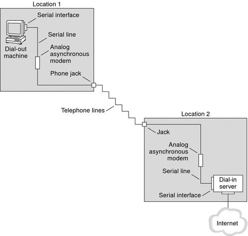
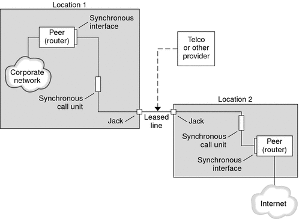

| Previous | Next |
Part I Network Services Topics
Part II Accessing Network File Systems Topics
4. Managing Network File Systems (Overview)
5. Network File System Administration (Tasks)
6. Accessing Network File Systems (Reference)
8. Planning and Enabling SLP (Tasks)
10. Incorporating Legacy Services
Part V Serial Networking Topics
15. Solaris PPP 4.0 (Overview)
Support for DSL Users Through PPPoE
16. Planning for the PPP Link (Tasks)
17. Setting Up a Dial-up PPP Link (Tasks)
18. Setting Up a Leased-Line PPP Link (Tasks)
19. Setting Up PPP Authentication (Tasks)
20. Setting Up a PPPoE Tunnel (Tasks)
21. Fixing Common PPP Problems (Tasks)
22. Solaris PPP 4.0 (Reference)
23. Migrating From Asynchronous Solaris PPP to Solaris PPP 4.0 (Tasks)
25. Administering UUCP (Tasks)
Part VI Working With Remote Systems Topics
27. Working With Remote Systems (Overview)
28. Administering the FTP Server (Tasks)
29. Accessing Remote Systems (Tasks)
Part VII Monitoring Network Services Topics
PPP Configurations and Terminology
This section introduces PPP configurations. The section also defines terms that are used in this guide.
Solaris PPP 4.0 supports a number of configurations.
Switched-access, or dial-up, configurations
Hardwired, or leased-line configurations
Figure 15-1 Parts of the PPP Link

The previous figure shows a basic PPP link. The link has the following parts:
Two machines, usually in separate physical locations, called peers. A peer could be a personal computer, engineering workstation, large server, or even a commercial router, depending on a site's requirements.
Serial interface on each peer. On Solaris machines, this interface could be cua, hihp, or other interface, depending on whether you configure asynchronous or synchronous PPP.
Physical link, such as a serial cable, a modem connection, or a leased line from a network provider, such as a T1 or T3 line.
Dial-up PPP Overview
The most commonly used PPP configuration is the dial-up link. In a dial-up link, the local peer dials up the remote peer to establish the connection and run PPP. In the dial-up process, the local peer calls the remote peer's telephone number to initiate the link.
A common dial-up scenario includes a home computer that calls a peer at an ISP, configured to receive incoming calls. Another scenario is a corporate site where a local machine transmits data over a PPP link to a peer in another building.
In this guide, the local peer that initiates the dial-up connection is referred to as the dial-out machine. The peer that receives the incoming call is referred to as the dial-in server. This machine is actually the target peer of the dial-out machine and might or might not be a true server.
PPP is not a client-server protocol. Some PPP documents use the terms “client” and “server” to refer to telephone call establishment. A dial-in server is not a true server like a file server or name server. Dial-in server is a widely used PPP term because dial-in machines often “serve” network accessibility to more than one dial-out machine. Nevertheless, the dial-in server is the target peer of the dial-out machine.
Parts of the Dial-up PPP Link
See the following figure.
Figure 15-2 Basic Analog Dial-up PPP Link
The configuration for Location 1, the dial-out side of the link, is composed of the following elements:
Dial-out machine, typically a personal computer or workstation in an individual's home.
Serial interface on the dial-out machine. /dev/cua/a or /dev/cua/b is the standard serial interface for outgoing calls on machines that run Solaris software.
Asynchronous modem or ISDN terminal adapter (TA) that is connected to a telephone jack.
Telephone lines and services of a telephone company.
The configuration for Location 2, the dial-in side of the link, is composed of the following elements:
Telephone jack or similar connector, which is connected to the telephone network
Asynchronous modem or ISDN TA
Serial interface on the dial-in server, either ttya or ttyb for incoming calls
Dial-in server, which is connected to a network, such as a corporate intranet, or, in the instance of an ISP, the global Internet
Using ISDN Terminal Adapters With a Dial-out Machine
External ISDN TAs have faster speeds than modems, but you configure TAs in basically the same way. The major difference in configuring an ISDN TA is in the chat script, which requires commands specific to the TA's manufacturer. Refer to Chat Script for External ISDN TA for information about chat scripts for ISDN TAs.
What Happens During Dial-up Communications
PPP configuration files on both the dial-out and dial-in peers contain instructions for setting up the link. The following process occurs as the dial-up link is initiated.
User or process on the dial-out machine runs the pppd command to start the link.
Dial-out machine reads its PPP configuration files. The dial-out machine then sends instructions over the serial line to its modem, including the phone number of the dial-in server.
Modem dials the phone number to establish a telephone connection with the modem on the dial-in server.
The series of text strings that the dial-out machine sends to the modem and dial-in server are contained in a file called a chat script. If necessary, the dial-out machine sends commands to the dial-in server to invoke PPP on the server.
Modem attached to the dial-in server begins link negotiation with the modem on the dial-out machine.
When modem-to-modem negotiation is completed, the modem on the dial-out machine reports “CONNECT.”
PPP on both peers enters Establish phase, where Link Control Protocol (LCP) negotiates basic link parameters and the use of authentication.
If necessary, the peers authenticate each other.
PPP's Network Control Protocols (NCPs) negotiate the use of network protocols, such as IPv4 or IPv6.
The dial-out machine can then run telnet or a similar command to a host that is reachable through the dial-in server.
Leased-Line PPP Overview
A hardwired, leased-line PPP configuration involves two peers that are connected by a link. This link consists of a switched or an unswitched digital service leased from a provider. Solaris PPP 4.0 works over any full-duplex, point-to-point leased-line medium. Typically, a company rents a hardwired link from a network provider to connect to an ISP or other remote site.
Comparison of Dial-up and Leased-Line Links
Both dial-up and leased-line links involve two peers that are connected by a communications medium. The next table summarizes the differences between the link types.
Leased Line |
Dial-up Line |
|---|---|
Always connected, unless a system administrator or power failure takes the leased-line down. |
Initiated on demand, when a user tries to call a remote peer. |
Uses synchronous and asynchronous communications. For asynchronous communications, a long-haul modem is often used. |
Uses asynchronous communications. |
Rented from a provider. |
Uses existing telephone lines. |
Requires synchronous units. |
Uses less costly modems. |
Requires synchronous ports, which are common on most SPARC systems. However, synchronous ports are not common on x86 systems and newer SPARC systems. |
Uses standard serial interfaces that are included on most computers. |
Parts of a Leased-Line PPP Link
See the following figure.
Figure 15-3 Basic Leased-Line Configuration
The leased-line link contains the following parts:
Two peers, each peer at one end of the link. Each peer might be a workstation or server. Often the peer functions as a router between its network or the Internet, and the opposite peer.
Synchronous interface on each peer. Some machines that run Solaris software require you to purchase a synchronous interface card, such as HSI/P, to connect to a leased line. Other machines, such as UltraSPARC® workstations, have built-in synchronous interfaces.
CSU/DSU synchronous digital unit on each peer, which connects the synchronous port to the leased line.
A CSU might be built-in to the DSU, or owned by you, or leased from a provider, depending on your locale. The DSU gives the Solaris machine a standard synchronous serial interface. With Frame Relay, the Frame Relay Access Device (FRAD) performs the serial interface adaptation.
Leased line, providing switched or unswitched digital services. Some examples are SONET/SDH, Frame Relay PVC, and T1.
What Happens During Leased-Line Communications
On most types of leased lines, peers do not actually dial each other. Rather, a company purchases a leased-line service to connect explicitly between two fixed locations. Sometimes the two peers at either end of the leased line are at different physical locations of the same company. Another scenario is a company that sets up a router on a leased line that is connected to an ISP.
Leased lines are less commonly used than dial-up links, though the hardwired links are easier to set up. Hardwired links do not require chat scripts. Authentication is often not used because both peers are known to each other when a line is leased. After the two peers initiate PPP over the link, the link stays active. A leased-line link remains active unless the line fails, or either peer explicitly terminates the link.
A peer on a leased line that runs Solaris PPP 4.0 uses most of the same configuration files that define a dial-up link.
The following process occurs to initiate communication over the leased line:
| Previous | Next |